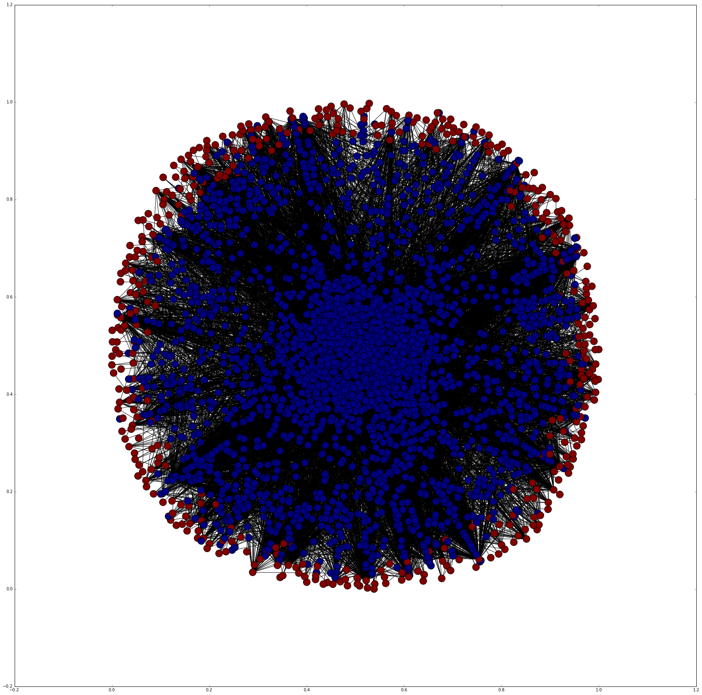

A network is formed from mapping out personalities traits and characters as nodes. If a character possesses a personality trait, a link will be formed between the two.
-
3,248 Characters
-
449 Personalities
-
10,352 Links

The red nodes indicate personalites traits while blue nodes indicate characters.
The network created looks complicated. This is because there is a total of 3248 characters and 449 personalites in the network. Thus, a highly complicated network of 10352 links between a total of 3697 nodes is formed. It has an average degree of 2.8 with the highest degree of a node as 817.
Analysis
The top 10 personalities are
- Kind
- Caring
- Friendly
- Loyal
- Brave
- Funny
- Sweet
- Mean
- Helpful
- Intelligent
Only one out of the top 10 personalities have negative meaning. This is very logical as most of disney characters are good, with only a few villians in each movie or show.
Forming communities
All the nodes are divided into mainly 16 communities based on the louvain method described in Fast unfolding of communities in large networks.
After looking through the list of characters in each community, it is noted that characters from the same show/film usually do not appear in the same community.
Let's look at the 5 main characters from the movie Wreck-It Ralph as an example.

These 5 main characters are all grouped in different communities. This is logical as they all have very different characteristics. Disney characters from the same film/show usually have very different personality as it will add to the dynamic of the show and make it more interesting.
Sentiment Analysis on Popular Characters' Personalities
The top 250 most visited characters pages are extracted from disney wikia. Sentiment analysis is done on their corresponding personality. A score calculated for each character by taking the average of all the happiness score given to each personality trait. If it scored an average sentiment of above 5, it will be listed as good, and below 5 will be listed as bad.
74.87% characters in the popular list are good! People are indeed more attracted to good characters than the bad. However around 25% of the characters are bad, which means that people are generally still very interested in characters with bad personality as well.
Is there link between personality types and popularity and likability?
Below is the list of popular personality and their corresponding percentage of popular characters that possess them.
- Kind: 23%
- Caring: 23%
- Friendly: 13%
- Loyal: 12%
- Brave: 13%
- Funny: 5%
- Sweet: 10%
- Mean: 4%
- Helpful: 6%
- Intelligent: 22%
Popular characters don't contains much popular personalites. This may be due to people liking more original characters that are refreshing instead of characters with personality very similar to other characters.